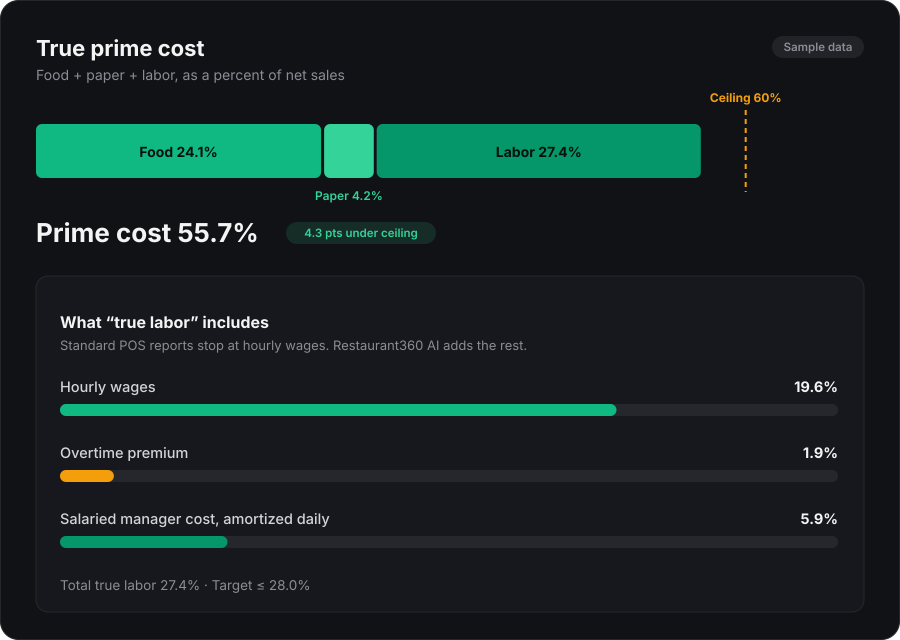
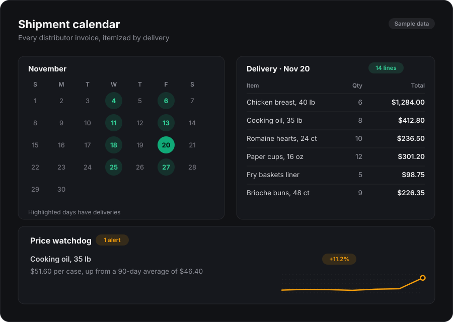
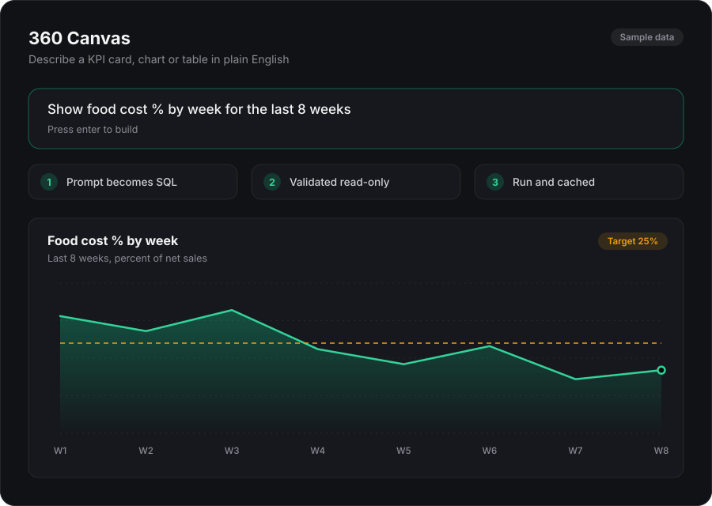

Artificial intelligence for restaurants
Know your true prime cost.
Every day, not weeks after close.
Restaurant360 AI brings your sales, distributor invoices and real labor cost into one place, then lets you ask it questions in plain English.

Four numbers decide whether a restaurant makes money
Restaurant360 AI tracks each one against a target, for every store, every day.
- ≤ 25%Food cost
- ≤ 4.5%Paper and packaging
- ≤ 28%True labor
- < 60%Prime cost
Default benchmark targets, as a percent of net sales. Targets are yours to change.
Getting started is simple
Your data already exists. Restaurant360 AI connects it, then does the math and the asking for you.
Sales
Point-of-sale sales, by store and day
Distributor invoices
Itemized lines, quantities and prices
Labor
Hourly wages, overtime and salaried cost
One true prime cost
Plus an assistant that explains it
Prime cost
Food. Paper. Labor. One number.
When prime cost surfaces weeks after month-end, the margin is already gone.
Restaurant360 AI computes it daily, with a labor figure that counts what a POS report leaves out.
- True labor. Hourly wages, overtime premium and salaried manager cost, amortized.
- Targets built in. Food, paper, labor and combined prime cost, each against its target.
- Sales, labor schedule and reputation views alongside the numbers.

COGS & inventory
Every invoice. Every line. Every shipment.
Distributor prices creep, and nobody reads fourteen invoice lines on a busy Thursday.
See each delivery on a calendar, drill into the line items, and get flagged when a price moves.
- Shipment calendar with itemized distributor invoices.
- Burn trends and estimated depletion to see what you are using.
- Par overrides and CSV exports for the way you already work.
- Price watchdog checks lines against recent history.

Ask 360
Ask in plain English. Get the numbers.
The answer is in your data, but finding it means a spreadsheet and an hour.
Ask 360 is a chat assistant with live tools over your store's data. It explains the why, not just the what.
- Morning briefing, prime-cost summary and labor report on request.
- Distributor price watchdog for invoice spikes.
- Read-only access. It can look at your data, never change it.
- Low, Medium and High tiers, from quick lookups to deep analysis.

360 Canvas
Describe it. Get the card.
Every operator wants a slightly different view, and nobody wants to wait for a report.
Describe a KPI card, chart or table in plain English. Canvas builds it from your data.
- Plain English in, a working chart or table out.
- Validated as read-only before it ever runs.
- Cached so the view comes back fast.

Built for real financial data
Payroll, sales and vendor invoices are sensitive. The product treats them that way.
Roles that are enforced
Owner, manager and member roles are checked on the server, not just hidden in the interface.
Financials stay with owners
Financial tables are blocked from non-owners in both the API and the chat tools.
Read-only by design
Questions run as read-only queries against your data. The assistant cannot change it.
Everything you need to run on real numbers
- Connects your sales, invoices and labor
- Calculates true prime cost against your targets
- Answers questions and builds views in plain English